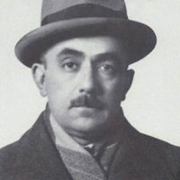

(1889 – 1974)

Cumhuriyet kuşağımızın ilk önemli romancılarından olan Yakup Kadri, yazdığı romanlarla bir yandan Kurtuluş Savaşı'nın başarılı olacağına dair inancını sergilerken bir yandan da asıl savaşın cephede değil gönüllerde kazanılacak savaş olacağının altını çizmiştir. Özellikle "Yaban" romanı, Anadolu insanına yüzyıllardır sırtını dönmüş olan Türk aydınına bir çağrı niteliğindedir.
Yakup Kadri Karaosmanoğlu, 27 Mart 1889 tarihinde Kahire'de dünyaya geldi. Babası Manisa'nın tanınmış Karaosmanoğlu Ailesi'ne mensup Abdülkadir Bey, annesi İkbal Hanım'dı. Babası 1833 yılında Kavalalı İbrahim Paşa'nın Manisa'yı işgali sırasında ona yakınlık göstermiş ve onun Mısır'daki konağına yerleşmişti. Abdülkadir Bey'in konak halkından İkbal Hanım ile yaptığı evlilikten dünyaya gelen ikinci çocuğu, Yakup Kadri oldu.
Ailesi, İbrahim Paşa'nın ölümü üzerine Türkiye'ye gelince ilköğrenimini Manisa'da Fevziye Mekteb-i İptidaisi'nde tamamladı.1903'te İzmir İdadisi'ne girdi. Şahabettin Süleyman ile arkadaşlığı bu okulda iken başladı. Çocukluk yıllarında başlayan edebiyat ilgisi, lise yıllarında daha da arttı. Babasının ölümü üzerine İzmir Lisesi'ndeki eğitimini tamamlayamadı ve 1905 yılında, annesiyle Mısır'a döndü. Mısır'daki Jön Türkler ile tanıştı, İzmir'e dönme isteğinden vazgeçti. Jön Türkler'in etkisiyle politikaya ilgi duymaya başladı. İskenderiye'deki bir Fransız okulunda ve İsviçre Lisesi'nde eğitim görerek iki yıl sonra ortaöğrenimini tamamladı. Bu yıllarda öğrendiği Fransızca ile Flaubert, Guy de Maupassant, Alphonse Daudet gibi ünlü Batılı yazarları okudu. Şerafettin Mağmumi'nin çıkardığı Türk adlı dergide Maupassant'tan yaptığı ilk çeviri öykülerini yayınladı.
Balkan Savaşı ve I. Dünya Savaşı'nda yaşananlar Yakup Kadri'nin edebiyat anlayışını değiştirmesine neden oldu; sanatın kişisel ve muhterem olduğu düşüncesinden uzaklaştı. Toplum için sanat anlayışına yöneldi ve Milli Edebiyat akımının sade dil anlayışını benimsedi. Mondros Mütarekesi'nden sonraki günlerde İkdam gazetesinde yazılar yazan Yakup Kadri, yazılarında Kurtuluş Savaşı'nı destekledi. Bir yandan da Yeni Mecmua'da Erenlerin Bağından adını verdiği nesirler yayımladı. Milli Mücadele ile ilgili hikayeler yazdı. Bu dönemdeki yazılarını daha sonra Ergenekon adıyla kitaplaştırdı (1929).
1920'de Milli Mücadele'yi izlemek için bazı arkadaşlarıyla birlikte Ankara'ya çağrıldı. Batı Cephesi'ni dolaştı ve bu seyahatinden milli duyguları güçlenmiş, geleceğe dair ümit dolu olarak İstanbul'a döndü. Gazetecilik çalışmaları devam ederken en büyük eserleri olan romanlarını yayımlamaya başladı. Kiralık Konak romanı İkdam'da tefrika edildi, daha sonra da kitap olarak basıldı. Yazarın kitap olarak basılan ilk romanı Kiralık Konak oldu. Bu, bireyci sanattan vazgeçtikten sonra yazdığı ilk romandı. Roman, Tanzimat'tan sonra değişen Osmanlı sosyal hayatını konu edinmekteydi.
1927'de Hüküm Gecesi, 1928'de Sodom ve Gomore adlı romanlarını yayımladı. Hüküm Gecesi romanında II. Meşrutiyet dönemini, Sodom ve Gomore'de ise Mütareke dönemini başarıyla yansıttı. Bir Sürgün (1937) romanında II. Abdülhamit dönemini ele alırken, iki ciltlik Panaroma (1953) romanı ise cumhuriyetin kök salma dönemleri olan 1923-1952 arasını işlemektedir. Yakup Kadri Anadolu insanını ve onun yaşayış tarzını romanlarında anarak Türk romanında ilk kez yurt insanını işleyen ve romanlarıyla onlara ulaşmaya çabalayan yazar oldu.
1932'de Vedat Nedim Tör, Şevket Süreyya Aydemir, Burhan Asaf Belge ve İsmail Hüsrev Tökin ile birlikte Kadro Dergisi'nin kurucuları arasında yer aldı. Kurtuluş Savaşı gözlemlerinden ve Tetkik-i Mezalim Komisyonu'nda yer aldığı dönemden esinlenerek yazdığı Yaban adlı romanı o yıl Kadro dergisinde yayımlandı ve büyük yankılar uyandırdı. 1942'de CHP Roman Yarışması'nda ikincilik ödülü kazanan Yaban, Karaosmanoğlu'nun en başarılı romanı sayılır. Yaban hem Anadolu'yu ve köylüyü konu edinen ilk önemli roman olmasıyla hem de gerçekliği şiirsel bir üslupla dile getirmedeki başarısıyla Türk roman tarihinde saygın bir yere sahiptir.
Yakup Kadri, 1966 yılında seçildiği Anadolu Ajansı yönetim kurulu başkanlığını sürdürmekte iken 13 Aralık 1974'te Ankara'da tedavi görmekte olduğu Gülhane Askeri Tıp Akademisi'nde hayatını kaybetti ve İstanbul Beşiktaş'taki Yahya Efendi Mezarlığı'nda annesinin mezarı yanında toprağa verildi.
Romanları: Kiralık Konak (1922), Nur Baba (1922), Hüküm Gecesi (1927), Sodom ve Gomore (1928), Yaban (1931), Ankara (1934), Bir Sürgün (1937), Panaroma (2 cilt-1953), Hep O Şarkı (1956)